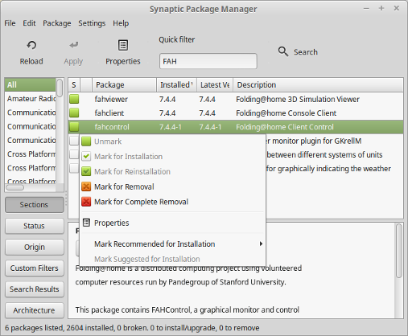
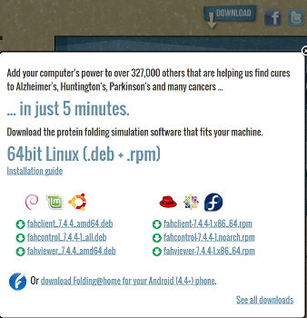
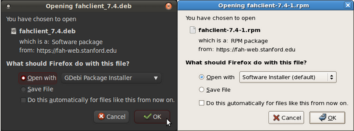
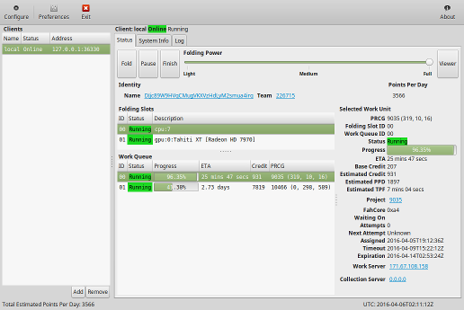
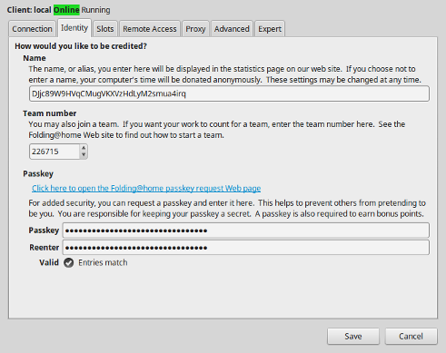
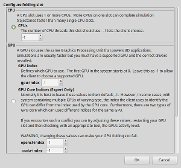

Folding is so much easier than mining. We are going to show you how to download the Folding @ Home client by Stanford University, install it, and configure it.
Folding @ Home is already in the package manager of many Linux distributions. We'll demonstrate installing with Synaptic Package Manager, apt-get from command line, and downloading the package from Stanford's download page.
To install with Synaptic Package Manager or a similar GUI front end, simply search for "fah", or navigate to the "science" category. Find "fahviewer", "fahclient", and "fahcontrol", right click on each to mark them for installation. Then click the "Apply" button to install the marked packages.
To install packages from the command line, you will need root or sudo privileges. First you want to update your package lists with an 'update', so the package manager knows about the latest packages. Then you can search the package cache for "fah" to see what related packages are available on your distribution.
sudo apt-get updateapt-cache search fah
Run apt-get with the install command listing the packages you wish to install. You will likely see the three Folding @ Home packages and simply need to do this:
sudo apt-get install fahcontrol fahviewer fahclient
If you are using OSX or your distribution doesn't have the Folding @ Home packages, you can download deb, rpm, or OSX pkg packages directly from Stanford. Go to folding.stanford.edu and click the "Download" button at the top. The website should detect that you are using Linux or OSX and provide relevant package downloads. If you don't see what you are looking for, click "See all downloads" in the bottom right corner.
Once downloaded clicking/double-clicking or right clicking and choosing install will typically install the package.
For detailed information on installing Folding @ Home, see Stanford's documentation:
Many Linux distributions will create a launcher for the Folding@Home applications in the "Education" category of the start menu. If you need to run from command line, you will find the applications are named with capitol letters (FAHViewer and FAHControl). Right now we want to run the FAHControl application.
Folding @ Home should already be started folding anonymously for the default team #0. Here is where you will need to get your Dogecoin wallet address that you want paid to ready. Click the "Configure" button in the top left corner. This will open the Configure dialog where almost everything you typically want is just fine by default, except for your identity. Select the "Identity" tab.
Here you will need to enter your wallet address in the "Name" box. Be careful to not miss any letters or have a space at the beginning or end of your wallet address. Dogecoinfah's automated system will not pay to invalid wallet addresses, you may be skipped! Enter the Dogefolders team number 226715 in the "Team Number" box. We suggestion you click the "passkey request" button and enter it in the "Passkey" boxes once finished (see next section for more information).
Registering for a passkey is not required, but you get bonus points when folding if you have one. A passkey prevents other people from being able to fold towards your folding name. To register for a passkey, you click the button when configuring your identity or simply go to the Stanford Passkey Registration Page. You enter your folding name, which should be your Dogecoin wallet address, your email address, and click the "Get Passkey" button. A passkey will be emailed to you. Enter the passkey into your Identity Configuration and enjoy bonus points. For more information, see Stanford's Passkey FAQ Page

Folding @ Home supports folding with AMD and nVidia graphics cards as well. Up to date proprietary drivers may be required. To add GPU folding, open the Configure dialog in FAHControl, and selected the "Slots" tab. This will list the slots which represent the separate working being done for you CPU and your GPU. If you only see CPU listed, you can click the "Add" button in the bottom right of the Slots Configure area. This allows you to select a GPU to add. Typically, you only need to select the GPU section and leave most values at their defaults. To select the GPU section, click the round radio button to the left of the section. Click "Ok" and the slot will be added.
After you've configured your identity, Folding @ Home will continue working in the back ground. You can close the FAHControl application and forget about it. That's all there is to it!